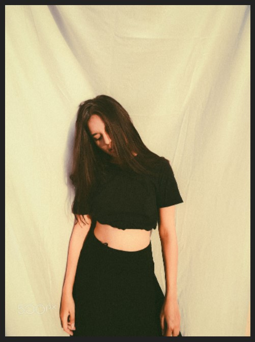
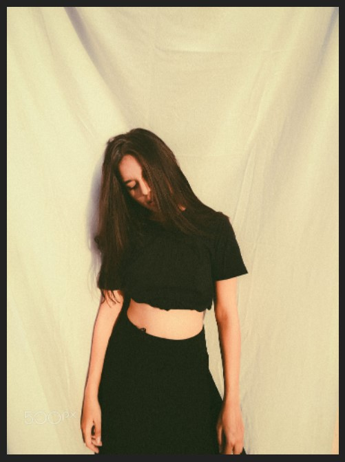
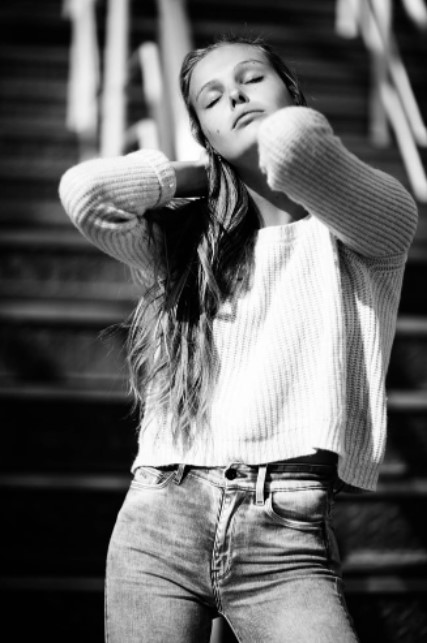
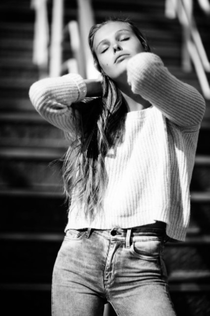

Home
This is a lookbook for photography model sessions that is separated into various styles and looks to help cover a great range of images in a photo session.


Studio Sessions
These are looks that can be captured in a studio photo session.
 



Photos in the Home
For a more limited type of photo session, these are images that can be taken conventionally inside the home.


The Great Outdoors
These are images we can take in nature or in the city. Generally these are what we can capture making the best of the outside.


 



swimsuit season
Picture references for the swimsuit sesh
Posing Plans
The chart references that cover a large variety of poses.


Special Projects
These are concept shots that we can photograph that will specifically be aiming for something similar to this image.